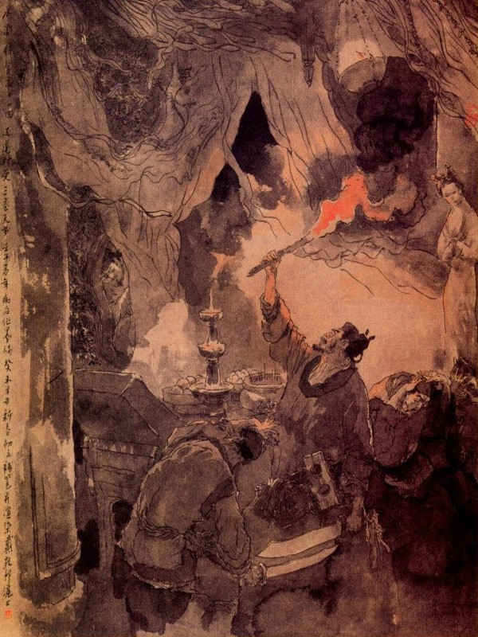
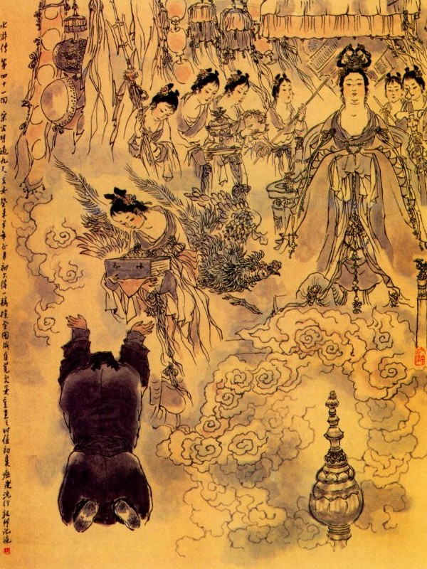
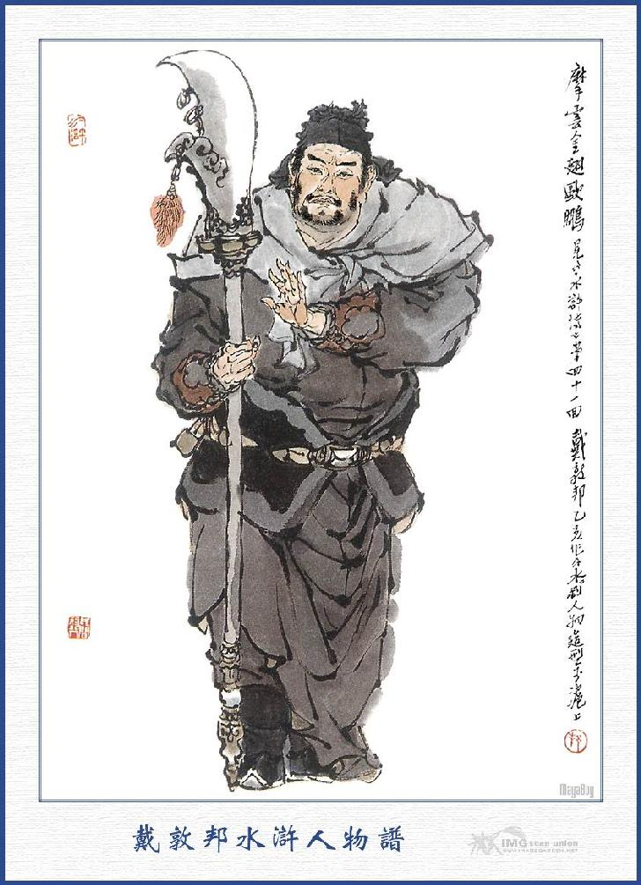

Khi đó Tống Giang nói với các vị hảo hán rằng:
- Tôi nhờ được anh em cứu vớt lên đây, mấy ngày nay yến ẩm nhàn dung thực là vui vẻ. Song còn một nỗi phụ thân xa cách, không biết ở nhà sự thể ra sao? Nhất lỡ mà phủ Giang Châu tâu với kinh sư rồi sức giấy ra để bắt thì tất nhiên nguy hiểm đến phụ thân. Vậy ngày nay tôi xin trở về cố quận, đón lão thân lên cùng ở đây thì trong lòng mới khỏi áy náy. Việc đó chẳng hay anh em có cho phép thế chăng?
Tiều Cái nghe nói đáp rằng:
- Việc đó là một điều nhân luân rất trọng lẽ đâu dám giữ hiền đệ ở đây vui thú một mình mà để riêng cho lão thân khổ sở? Song vì nỗi mấy hôm nay anh em khó nhọc, người ngựa trong trại chưa được nghỉ ngơi, vậy xin hãy hoãn lại trong hai hôm nữa, sẽ điểm quân mã đem về để đón thì có lẽ tiện hơn.
Tống Giang nói:
- Nhân huynh dạy, hãy khoan trong mấy hôm nữa, kể cũng là phải, song chỉ e nay mai có giấy sức đến nơi thì trong nhà rất nguy hiểm. Vậy việc này không thể nào để chậm lại được và cũng không phải cần đem quân mã làm chi, chỉ một mình Tống Giang tôi lẻn về cố quận, cùng với Tống Thanh đưa lão thân lên đây, như thế thì mới im lặng mà không ai biết được. Bằng nay lại kéo nhau ầm ầm đến đó thì tất nhiên náo động đến dân làng mà không khéo lại xảy ra lắm điều không tiện cũng nên.
- Đành vậy, nhưng lỡ khi hiền đệ xảy ra chuyện gì ở giữa đường thì lấy ai cứu được?
Tống Giang quả quyết mà rằng:
- Vì bằng có gì khiến phụ thân phải chết thì còn hối hận sao được?
Nói đoạn nhất định xin đi, bọn Tiều Cái không giữ lại được, đành phải để mặc cho tùy ý. Bấy giờ Tống Giang ăn uống xong, liền đội nón dắt dao, cầm thanh gậy ngắn rồi từ giã các vị mà đi xuống núi. Các vị Đầu Lĩnh cũng đưa chân ra tới bến Kim Sa rồi mới trở về.
Một mình Tống Giang xuống thuyền, ra đến hàng rượu Chu Quý rồi xăm xăm lên đường cái mà theo lối trở về Vận Thành.
Sông Ngô bể Sở tung hoành.
Phần du muôn dặm sinh thành bao công?
Sao cho phụ tử trùng phùng,
Giang san này hội vầy vùng thiếu chi?
Một buổi sớm kia, Tống Giang đã về đến Tống Gia Thôn, không dám đường đột vào ngay gia trang, đành phải tạm lánh một nơi, đợi đến tối mới trở về thăm hỏi. Khi đến cửa, chàng gõ mấy tiếng thì thấy Tống Thanh chạy ra đón tiếp.
Tống Thanh có vẻ ngạc nhiên hỏi rằng:
- Sao Ca Ca lại dám về đây như thế?
Tống Giang đáp rằng:
- Ta về để đón gia phụ cùng em đi đây.
- Chết nỗi! Công việc Ca Ca làm ở Giang Châu đã lừng lẫy cả lên, quan Huyện nay đương phái hai tên Đô Đầu họ Triệu; cứ hằng ngày đến canh giữ ở đây, chỉ đợi công văn ở Giang Châu đến là bắt cả phụ thân cùng em mà cho vào ngục cả rồi sau sẽ lùng bắt Ca Ca. Hiện bây giờ ngày nào cũng có hơn trăm thổ binh đến vây bọc xung quanh, Ca Ca phải đi tìm ngay bọn Lương Sơn về mà cứu lấy cha em mới được.
Tống Giang nghe nói giật mình kinh sợ, không dám bước chân vào nhà, vội vàng lại phải quay đi mà theo đường về Lương Sơn Bạc.
Đêm hôm ấy trăng sáng mờ mờ, đường đi không rõ, một mình Tống Giang hết sức mãi miết tìm lối vắng vẻ mà rảo đi cho chóng.
Đi được hơn một trống canh thì chợt thấy đằng sau có tiếng reo hò ầm ĩ cả lên. Tống Giang lấy làm kinh lạ, quay đầu lại nom, thấy cách một hai dặm đường sau, có một lũ đóm đuốc đi theo, miệng kêu lên:
- Tống Giang đừng chạy nữa.
Tống Giang nghe vậy, vừa mãi miết chạy, vừa nói thầm trong bụng rằng:
- Chỉ vì ta không nghe lời Tiều Cái, nên quả nhiên họa hoạn đến nơi. Trăm lạy Hoàng Thiên, cứu cho Tống Giang thoát nạn.
Chàng vừa chạy vừa trông, được một lát thì bỗng thấy mây mù tan tác. Hiện ra một bóng Hằng Nga, chói lọi rồi lần lần đi đến một thôn, tục gọi là thôn Hoàng Đạo, thôn này trước sau toàn thị non cao, xung quanh có nước, khoảng giữa có một con đường đi thẳng vào thôn, không còn lối nào rẽ đi được. Tống Giang nhận biết đường đó khó đi, đã toan quay đi trở lại, song đã thấy bọn kia ồ ập lối ngoài mà soi đuốc soi đóm sáng như ban ngày vậy. Chàng thấy thế lại rảo bước mau vào trong thôn để trốn tránh.
Khi đi qua một khu rừng, thấy có một tòa cổ miếu ở đó, chàng liền lất tay đẩy cửa đi vào, tìm đến đằng sau điện mà định ẩn thân ở đó. Chàng trông trước trông sau, thấy địa thế không thể nào ẩn được, trong bụng còn đương hoảng hốt kinh hoàng thì đã thấy phía ngoài có tiếng nói lên rằng:
- Chỉ ở trong miếu này thôi.
Tống Giang nghe nói cuống cả người lên, định tìm chỗ nấp mà không chỗ nào nấp được. Chợt trông thấy trên điện có một chỗ gác con con làm bàn thờ ở đó chàng liền sờ tay vén màn thờ, nhẩy tót lên dựng gậy vào một xó rồi ngồi thu gọn lỏn vào đó mà run lên cầm cập.
Bấy giờ ánh sáng ở ngoài, đã dần dần đi vào tới nơi chàng bèn ngó cổ ra xem thì thấy Triệu Năng, Triệu Đắc dẫn bốn năm mươi người cầm đóm đuốc đi vào soi xét các nơi. Khi soi gần đến trên điện thì Tống Giang vừa run vừa nói một mình rằng:
- Phen này tất ta nguy hiểm mất. Xin thần minh phù hộ cho tôi. Lạy thần minh phù hộ cho tôi. Trăm lạy thần minh phù hộ cho tôi.
Được một lát chúng soi quanh quẩn không thấy gì, liền lướt qua mà không soi vào bàn thờ nữa.
Bấy giờ Tống Giang mới hơi vững dạ khỏi run mà nói rằng:
- Thực là trời thương!
Vừa nói đó thì Triệu Năng, Triệu Đắc lại đi vào, cầm đóm đuốc đi đến bàn thờ để soi, Tống Giang thấy vậy lại run lêm cầm cập, như là sắp chết đến nơi. Triệu Đắc một tay cầm bó đuốc, một tay cầm thanh đao, gẩy bàn thờ để soi. Dè đâu khói lửa bốc lên làm cho bụi bặm ở trên rơi xuống, rơi ngay vào giữa mắt Triệu Đắc, chàng ta liền nhắm mắt lại mà vất ngay bó đuốc xuống đất, đạp dọi tắt đi mà chạy ra ngoài cửa điện.
Khi ra tới cửa, Triệu Đắc bảo với bọn thổ binh rằng:
- Thằng cha ấy không có ở trong miếu mà đây cũng không có lối cửa đi vào, không biết rằng nó trốn đi đâu cho được?
Bọn thổ binh nói:
- Chắc có lẽ nó chạy vào đám rừng kia hẳn; Nhưng ở đấy thì cũng khó lòng tẩu thoát được. Cả thôn chỉ có một con đường ra vào, trong tuy có núi cao rừng lớn, song cũng hết đường mà lên. Đô Đầu cứ giữ riết ngoài cửa thôn, cho hắn ta có cánh cũng khó lòng bay đâu cho thoát. Chỉ sáng mai là thế nào ta cũng lùng bắt được.
Triệu Năng, Triệu Đắc khen phải, liền dẫn tụi thổ binh ra đi.
Bấy giờ Tống Giang lại đỡ run sợ nói một mình rằng:
- Hú vía! Thực là thần minh đã phù hộ cho ta, sau này được toàn sự nghiệp, ta sẽ sửa lại miếu, tô lại tượng.
Nói chưa dứt lời thì lại thấy tên thổ binh kêu lên rằng:
- Đô đầu lại mà xem, trên cửa miếu có in hai vết bàn tay vào bụi, tất nhiên là hắn mới đẩy cửa đi vào trong miếu đây.

Triệu Năng nghe nói, vội vàng đến xem rồi lại dẫn người vào miếu để tìm, Tống Giang thấy vậy, lại run lên như cầy sấy, chắc rằng cái chết đến nơi, chúng vào đến miếu tìm trước sau, trông trên trông dưới, chỉ còn thiếu nước lật gạch lên là cùng. Khi soi đến trên điện, Triệu Năng bảo với chúng rằng:
- Chỉ còn chỗ bàn thờ lúc nãy xem chưa kỹ, để tôi tìm lại lượt nữa xem sao?
Nói đoạn một tên thổ binh cầm đóm giơ lên, Triệu Năng kéo màn ra rồi năm bảy người ngó cổ lên để nom.
Vừa khi chúng nom vào, bỗng thấy một trận ác phong thổi tắt bó lửa rồi thấy hắc khí vây kín quanh miếu, giáp mặt cũng không trông rõ được nhau, Triệu Năng kêu lên rằng:
- Quái lại! Sao lại có trận ác phong bất thình lình như vậy? Cái này chắc là thần linh trách giận ta, sao được nom dòm vào đó hẳn? Thôi chúng ta ra canh giữ cửa thôn, để sáng mai sẽ tìm cũng được.
- Chỉ còn chỗ bàn thờ chưa tìm được kỹ, hay là ta xỉa giáo vào xem có gì không?
Triệu Năng khen phải rồi hai người toan quay lại để xỉa giáo vào xem. Dè đâu lại nghe thấy đằng xa sau điện, bỗng nổi một trận quái phong, ném tung cát đá làm cho một tòa cổ miếu như là chuyển động ầm ầm rồi thấy mây đen mờ mịt bao bọc xung quanh, khiến người đứng đó ai cũng sởn gai đứng tóc mà kinh sợ vô cùng.
Triệu Năng biết sự bất thường, liền gọi Triệu Đắc mà bảo rằng:
- Thôi Thần Minh có ý không bằng lòng, chúng ta đi đi thôi.
Nói đoạn anh nào anh nấy vội vàng cướp lối mà chạy ra. Bấy giờ bọn thổ binh mãi chạy đến nỗi vấp ngã, sướt da toạc thịt mà vẫn phải gắng gượng để đi. Khi ra đến cửa miếu, bỗng nghe thấy phía trong có tiếng người kêu ầm lên rằng:
- Tha cho chúng tôi.
Triệu Năng nghe tiếng kêu, vội chạy vào xem, thấy ba bốn tên ngã lăn ở sân miếu, rễ cây quấn cả lấy áo xống rồi tay cầm dao tay bứt áo miệng kêu van mà vẫn không sao dậy được.
Tống Giang ngồi trong bàn thờ nghe thấy vậy cũng lấy làm quái lạ mà vừa run vừa nhịn cười không được. Triệu Năng thấy chúng như vậy, phải vội vàng cởi áo cho mấy đứa thổ binh ấy mà dắt ra.
Sau có mấy đứa thổ binh đi trước nói với chúng rằng:
- Tôi vẫn bảo ở đây thiêng lắm, các anh không nghe cứ làm liều làm lĩnh, để thiệt hại đến thân!
Bây giờ cứ ra ngoài cửa thôn mà canh giữ thì hơn, nó trốn đi đâu cho được mà sợ?
Triệu Năng, Triệu Đắc lấy làm phải, bèn dẫn chúng ra cửa thôn để đón. Bấy giờ Tống Giang lại hơi hơi tỉnh hồn mà nói lẩm bẩm rằng:
- Nhờ thần thánh không bị họ bắt được bây giờ, nhưng biết làm thế nào mà ra khỏi cửa thôn này được?
Chàng đương nghĩ ngợi vẩn vơ; thì chợt nghe thấy dưới miếu có người đi ra, chàng lại run lên bấn bật mà kêu khổ một mình. Đoạn rồi liếc mắt trông ra thấy hai Thanh Y Đồng Tử đi thẳng vào dưới bàn thờ nói lên rằng:
- Tiểu đồng vâng pháp chỉ Nương Nương, mời Tinh chủ đến nói chuyện.
Tống Giang ngồi lặng ngắt, không dám nói năng chi cả.
Hai Đồng Tử ở ngoài lại nói luôn rằng:
- Nương Nương cho mời, xin Tinh Chủ đi ngay cho.
Tống Giang cứ lặng yên không dám đáp.
Đồng Tử lại nói:
- Xin Tinh Chủ chớ chậm trễ, Nương Nương đợi đã lâu rồi.
Tống Giang bấy giờ mới nghe rõ, không phải là tiếng đàn ông, chàng liền chui ở trong gầm ngai ra rồi nom xuống dưới thì thấy hai người Thanh Y Nữ Tử, đương đứng chực ở bên giường thờ ở dưới, chàng thấy vậy cả kinh, nom kỹ thì té là hai pho tượng đất ở đó.
Chợt lại thấy có tiếng thỏ thẻ nói rằng:
- Dám thưa Tống Tinh Chủ, Nương Nương tôi xin mời vào nói chuyện.
Tống Giang cả gan vén màn nom rõ ra ngoài, lại thấy hai nữ tiên đồng búi tóc áo xanh, vái chào cúi rạp mình xuống, chàng liền hỏi rằng:
- Hai vị tiên đồng ở đâu đến đây?
Nữ Đồng nói:
- Chúng tôi vâng pháp chỉ Nương Nương, đón mời Tinh Chủ vào cung.
Tống Giang đáp rằng:
- Tiên Đồng lầm rồi, tôi đây họ Tống tên Giang, có phải là Tinh Chủ nào đâu?
- Không, không phải là chúng tôi lầm, xin Tinh Chủ đi ngay cho, Nương Nương đợi đây đã lâu rồi.
- Nương Nương nào? Tôi có được bái kiến bao giờ mà dám đến?
- Xin Tinh Chủ cứ đến đó rồi sẽ biết, bất tất ngài phải hỏi.
- Nương Nương ở đâu?
- Hiện ở trong cung sau kia.
Nói đoạn liền thúc giục Tống Giang mà dẫn đi, Tống Giang xuống điện đi theo, tới một cánh cửa ở trước bức tường sau điện thì hai tên Thanh Y trỏ bảo Tống Giang rằng:
- Xin Tinh Chủ cứ lối này mà đi.
Tống Giang bước ra khỏi cửa, thấy trăng sao sáng quắc, gió thoảng mùi hương, bốn mặt toàn là cây xanh cảnh tốt, khác hẳn trần gian. Chàng thấy vậy tự nghĩ trong bụng: Nếu ta biết được rằng có chỗ này thì đến ngay đây mà ẩn nấp, có lẽ khỏi bị những sự lôi thôi như lúc nãy.
Chàng vừa đi vừa xem, thấy hai bên trồng toàn thông lớn quá ôm. ở giữa có một con đường mai rùa rộng rãi. Được một lát đi bộ hơn dặm đường, bỗng nghe thấy tiếng nước khe róc rách rồi thấy có một tòa cầu đá xanh hiện ra trước mặt. Hai bên cầu có lan can đỏ, trên bờ trồng toàn hoa tươi cỏ lạ, trúc đẹp tùng xanh, cùng các giống liễu rất đẹp. Dưới khe có ngọn nước trắng như tuyết, ở trong động chảy ra, trông càng ngoạn mục vô cùng? Khi qua cầu thấy hai bên trồng toàn cây lạ. Phía giữa có cửa chắn song, Tống Giang đi vào cửa chắn song, ngẩng nom xem thấy cung điện nguy nga thì tự nghĩ một mình, quái lạ! Ta đã ở đất Vận Thành, xưa nay chưa từng nghe nói, trong có chỗ này bao giờ? Chàng nghĩ vậy thì trong lòng nghi hoặc, không dám bước chân đi.
Thanh Y lại thúc giục mà rằng:
- Xin mời Tinh Chủ cứ đi luôn vào.
Nói đoạn lại dẫn chàng vào trước sân Rồng, Tống Giang nom quanh thấy hai bên hành lang, toàn cột sơn son đỏ chói. Chính giữa có tòa điện lớn đèn nến sáùng choang như ban ngày vậy.
Thanh Y dẫn vào qua sân Rồng, đi lên Nguyệt Đài thì chợt nghe có mấy người Thanh Y trên thềm điện nó rằng:
- Nương Nương có lệnh mời, xin Tinh Chủ lên ngay.
Tống Giang vào đến điện lớn, nghe trong mình sợ hãi, đứng sởn tóc gáy mà trông dưới thềm toàn thị vẽ Rồng, sơn Phượng, lạ mắt vô cùng. Chợt thấy Thanh Y vào trong rèm tâu rằng:
- Chúng tôi vâng lệnh đi đón Tống Tinh Chủ đã về đây.
Tống Giang đến trước rèm liền cúi mình trước sập ngự lạy chào hai lạy rồi phủ phục nói rằng:
- Chúng tôi là kẻ hạ dân mê muội, không được biết uy thánh thượng, xin ngài lấy lượng Trời bể mà nhủ thương cho.
Nói đoạn thì thấy trong rèm truyền chỉ ra rằng:
- Mời Tinh Chủ hãy ngồi.
Tống Giang nghe nói, không dám cất đầu lên, sau thấy sai bốn người Thanh Y nâng dậy mà mời ngồi lên đôn gấm. Tống Giang vâng lời, miễn cưỡng ngồi xuống đôn. Đoạn nghe tiếng cuốn rèm lên, bọn Thanh Y liền quấn rèm vắt lên trên móc vàng rồi thấy Nương Nương hỏi lên rằng:
- Tinh Chủ lâu nay có được an khang không?
Tống Giang nghe hỏi, vội đứng dậy vái lạy mà rằng:
- Chúng tôi là kẻ dân thứ, đấu dám ngửa liếc Thánh Dung.
Nương Nương lại nói lên rằng:
- Tinh Chủ đã đến đây, bất tất phải quá khiêm như vậy.
Bấy giờ Tống Giang nghe nói, mới chịu ngẩng đầu lên trông, thấy trên điện chạm vàng lóng lánh, pha lẫn ánh đèn Long Phượng sáng choang, hai bên Thanh Y nữ đồng cầm hốt bưng khuê, cùng cầm cờ quạt đứng hầu, chính giữa kê giường thất bảo cửu long, Nương Nương mình mặc áo tơ vàng thêu đỏ, tay cầm Bạch Ngọc Khuê Chương, mắt sáng thiên nhiên, mặt tiên chính đại, ngồi trên giường, bảo Thanh Y rót rượu đem mời Tống Giang. Bọn Thanh Y Nữ Đồng vâng lời đem bình rượu ra rót vào chén rồi một người nữ đồng lớn nhất bưng ra để mời.
Tống Giang đứng dậy đỡ lấy chén rượu rồi quỳ xuống mà uống một hơi. Bấy giờ nghe chừng hơi rượu thơm Tiêu Hà xông bốc khắp cả người không khác gì lễ hồ gội đầu, cam lộ rưới ruột vậy. Lại có một người Thanh Y bưng mâm táo tiên lên mời. Tống Giang run run sợ sợ, e khi lỡ làng vô lễ, bèn rón rén cất lấy một quả để ăn rồi giữ cái hạt táo ở trong tay. Thanh Y Nữ Đồng lại rót chén rượu nữa để mời, Tống Giang nâng lấy uống một hơi hết, rồi Nương Nương lại truyền lệnh mời luôn chén nữa, Tống Giang uống hết chén rượu thứ ba rồi Thanh Y lại đưa mâm táo xuống mời, chàng lại cất lấy hai quả táo nữa mà ăn.
Khi ăn uống xong, Tống Giang nghe trong người nong nóng, phảng phất có hơi rượu, chàng vội vàng sợ có điều thất lễ, liền đứng dậy vái mà nói rằng:
- Kẻ thần hạ không uống được rượu, xin Nương Nương tha phép cho.
Nương Nương nghe nói truyền rằng:
- Tinh Chủ không xơi được rượu thì thôi, không dám miễn cưỡng làm chi. Thanh Y đây? Lấy ba quyển Thiên Thư đưa cho Tinh Chủ.
Thanh Y vâng lời, liền quay vào trong bình phong bưng ra một cái mâm, một bệ vóc vàng, ba quyển Thiên Thư mà đưa cho Tống Giang, Tống Giang giơ tay nâng lấy, trông chừng quyển sách bề dài độ năm tấc, bề rộng độ ba tấc, song không dám mở xem, bèn đứng dậy lạy nhận mà bỏ vào trong bọc.
Nương Nương phán bảo với Tống Giang rằng:
- Tống Tinh Chủ ơi! Ta truyền cho ngươi ba cuốn Thiên Thư này, ngươi khá thay trời làm Đạo làm chúa phải hết lòng trung nghĩa làm tôi phải hết sức yêu dân, bỏ đường tà theo đường chính, chớ nên xao nhãng sai lầm mới được.

Tống Giang cúi lạy vâng lời, Nương Nương lại phán rằng:
- Đức Ngọc Hoàng nhận thấy Tinh Chủ chưa dứt lòng ma, chưa tu trọn Đạo, nên tạm phạt xuống nơi trần thế, không bao lâu lại được trở về Tiên Cung. Vậy Tinh Chủ chớ nên đổi dạ thay lòng mà lỡ ra tội xuống Phong Đô thì ta đây cũng khó lòng cứu nổi. Ba cuốn sách này phải xem cho kỹ mà thuộc cho kỹ, chỉ nên cùng với sao Thiên Cơ mà xem, còn không thể cho người nào khác xem được. Khi công việc xong tất phải đốt đi, chớ để làm chi ở nơi trần thế, ngững lời ta dặn, phải nhớ chớ quên. Hiện nay tiên phàm đôi ngả không thể ở lâu, vận ngươi nên mau mau trở về rồi sau đây lầu ngọc cửa vàng, tất lại có phần hậu hội.
Nói đoạn sai Đồng Nữ kíp dẫn Tống Giang về, Tống Giang lạy Nương Nương rồi theo chân lũ Thanh Y Nữ Đồng mà đi ra ngoài điện.
Khi đi qua cửa chấn song, ra đến bên cầu đá, Thanh Y bảo với Tống Giang rằng:
- Vừa rồi Tinh Chủ bị cơn nguy hiểm, nếu không có Nương Nương bảo hộ thì tất là bị bắt. Sáng ngày mai thì Tinh Chủ khắc được thoát nạn ấy ngay. Kìa Tinh Chủ nom dưới cầu có hai con Rồng đùa giỡn với nhau kìa.
Tống Giang đứng tựa lan can, quay xuống khe xem, quả thấy hai con Rồng đương lượn đùa dưới nước, rất là lạ mắt xưa nay. Chàng đương xem ngắn ngẩn ngơ, bỗng bị Thanh Y đẩy ngã xuống nước rồi kêu lên một tiếng, đập đầu phải cạnh bàn thờ mà mở mắt ra nom thì là giấc mộng.
Bấy giờ Tống Giang ngó cổ nom ra. Thấy bóng trăng đương sáng, trời đêm chừng canh ba, bàn tay chàng vẫn có ba hạt táo mà trong bọc cũng có ba quyển Thiên Thư, mùi rượu thơm tho vẫn còn trong miệng, thực là một sự quái kỳ, không biết ra sâo mà đoán được?
Chàng nghĩ quanh nghĩ quẩn một mình:
- Rõ là mộng mà không phải mộng, những lời dặn dò vẫn nhớ không quên, Thiên Thư còn đây, hột táo còn đó, sao lại cho là mộng được! Nếu không phải là mộng thì rõ ràng ta vẫn ở đây sao lại thấy cung điện lâu đài như thế? Cái đó chẳng hay thần thánh thiêng liêng mà ứng hiện cho ta được biết đấy chăng?
Nghĩ đoạn liền mở màn cho sáng để xem thì thấy trên ngai Cửu Long có một bức tượng Nương Nương không khác cho người lúc nẫy. Chàng lại tưởng tượng:
- Nương Nương gọi ta là Tinh Chủ, có lẽ kiếp trước ta cũng không tầm thường hẳn? Ba quyển Thiên Thư cho ta, tất là có dụng mà những lời dặn bảo ta vẫn nhớ không quên. Thanh Y Nữ Đồng lại bảo ta là sáng mai thoát nạn, vậy bây giờ sắp sáng, ta thử đi ra xem sao?
Chàng nghĩ vậy liền vớ lấy thanh gậy, rũ sạch áo xống rồi nhẩy xuống điện đi theo lối tả lang mà ra ngoài cửa miếu. Bấy giờ ngẩn nom thấy có biển để khắc bốn chữ vàng "Miếu Bà Huyền Nữ" thì giơ tay lên trán mà rằng:
- Té ra là miếu Cửu Thiên Huyền Nữ Nương Nương ở đây. Người đã truyền cho ta ba cuốn Thiên Thư mà cứu được tính mệnh cho ta, sau này, dù có mở mặt với đời, tất xin sửa lại miếu điện để tạ ơn tế độ từ bi mới được.
Nói xong liền xăm xăm tìm lối đi ra cửa thôn. Đi khỏi mới được mấy bước, bỗng nghe thấy đằng xa có tiếng ầm ầm vang động, chàng liền đứng dừng lại mà rằng:
- Nếu ta ra đấy tất nhiên bị họ bắt được, vậy chi bằng nấp ở bên cạnh đường rồi sau sẽ liệu.
Chàng nghĩ vậy bèn lẻn vào sau gốc cây bên đường để nấp. Vừa khi ấy, mấy tên thổ binh chạy vội chạy vàng, ngã xiêu ngã vẹo, miệng kêu lên rằng:
- Xin thần thánh cứu vớt tôi với.
Tống Giang thấy vậy, nghĩ thầm rằng:
- Quái lạ! Chúng định đón ngoài cửa thôn để bắt ta, cớ sao lại nhẩy vào đây mà kêu lên như thế?
Vừa nghĩ vậy thì lại thấy Triệu Năng cũng lật đật chạy vào, miệng cũng kêu lên rằng:
- Xin thần thánh cứu mạng cho tôi.
Tống Giang lại nói lẩm bẩm một mình:
- Không biết chúng làm gì mà nói lên như thế? Nói đoạn đã thấy một đại hán sồng sộc ở ngoài đuổi vào. Đại hán này cởi trần trùng trục, bắp thịt nổi lên như bắp chuối, hai tay cầm hai đại phủ, miệng thét mắng ầm ầm:
- Những thằng ranh kia chạy đi đâu?
Tống Giang định tình nom lại thì chính là Hắc Toàn Phong Lý Quỳ ở đó. Chàng lại mơ mơ màng màng tưởng lại trong mộng, quanh quẩn không dám đi ra. Bấy giờ Triệu Năng chạy đến trước cửa miếu, vướng phải gốc cây thông, bị ngã xuống đất. Lý Quỳ liền sấn ngày vào, một chân dận lên xương sống, một tay giơ đại phủ lên để chém. Lý Quỳ vừa toan hạ tay xuống thì thấy Âu Bằng, Đào Tôn Vượng, đều khoác nón cầm đao ở phía sau chạy đến, Lý Quỳ sợ hãi người chạy đến tranh công, liền giơ búa chém Triệu Năng một nhát xả làm đôi rồi quay ra đuổi giết thổ binh, chạy giạt ra các ngả.

ÂU BẰNG
Tống Giang thấy vậy cũng chưa dám thò ra. Chợt lại thấy có ba hảo hán nữa là Lưu Đường, Thạch Dũng và Lý Lập cùng xông đến mà đánh đuổi thổ binh. Khi thổ binh đuổi giết giặc gần hết mà sao không thấy Tống Giang, cả bọn đang ngơ ngác đi tìm, bỗng thấy Thạch Dũng kêu lên rằng:
- Ai đứng nấp đằng sau gốc cây kia?
Bấy giờ Tống Giang nghe nói mới dám thò mặt ra, nói với sáu người kia rằng:
- Xin cảm tạ anh em, đã có lòng thương mà cứu tính mạng cho tôi, không biết lấy chi đền báo?
Sáu tay hảo hán trông thấy Tống Giang, đều cả mừng mà nói rằng:
- Ca Ca đây rồi, phải đi báo cho Tiều Đầu Lĩnh biết. Mau.
Thạch Dũng, Lý Lập nghe nói liền quay đi báo. Tống Giang hỏi Lưu Đường rằng:
- Sao các bác biết tôi ở đây mà đến để cứu?
Lưu Đường đáp rằng:
- Từ khi Ca Ca bước chân đi khỏi Lương Sơn, Tiều Đầu Lĩnh cùng Ngô Quân Sư lấy làm áy náy không yên, liền sai Đới Viện Trưởng lập tức đi theo để thám thính. Sau Tiều Đầu Lĩnh cũng không được yên tâm, lại đem chúng tôi đem quân đi tiếp ứng, chỉ sợ Ca Ca lỡ gặp không may thì không lấy chi mà giúp đỡ. Khi chúng tôi đi đến nửa đường gặp Đới Tung nói rằng:
- "Có hai tên nào đem thổ binh đi đuổi Ca Ca". Bởi vậy Tiều Đầu Lĩnh cả giận, cho Đới Tung về sơn trại, chỉ để quân sư, Công Tôn Thắng tiên sinh, ba anh em họ Nguyễn, cùng Lã Phương, Quách Thịnh, Chu Quý, Bạch Thắng, ở lại coi trại, còn bao nhiêu anh em là phải đến đây để tìm Ca Ca cả. Tới đây thấy người ta nói là chúng đuổi Ca Ca vào trong thôn này để chẹn bắt. Nhân thế chúng tôi đã giết hết cả thổ binh canh giữ cửa thôn, chỉ còn sót mấy thằng vào đây là Lý Ca đuổi giết đó thôi.
Vừa nói đến đó thì đã thấy Thạch Dũng dẫn Tiều Cái, Hoa Vinh, Tần Minh, Hoàng Tín, Tiết Vĩnh, Tương Kính, cùng Mã Lân đi đến. Một đằng Lý Lập dẫn Lý Tuấn, Mục Hoằng, Trương Thuận, Mục Xuân, Hầu Kiện, Tiêu Nhượng, Kim Đại Kiện, đến chào hỏi Tống Giang.
Tiều Cái bảo với Tống Giang rằng:
- Tôi đã bảo hiền đệ, không nên đi một mình; hiền đệ không nghe tôi nói, có phải suýt nữa thì nguy hiểm lắm không?
Tống Giang tạ ơn mọi người rồi nói với Tiều Cái rằng:
- Tiểu đệ vì còn chút lão thân ở đó, cho nên mới dám mạo hiểm mà đi như vậy, xin nhân huynh cũng lượng tình xét cho.
Tiều Cái nói:
- Tôi xin nói tin này cho hiền đệ mừng: Hiện tôi đã sai Đới Tung đem Đỗ Thiên, Tống Vạn, Vương Nuy Hổ, Trịnh Thiên Thọ, Đồng Uy, Đồng Mãnh đi đón tôn nghiêm và cả gia quyến đưa về sơn trại, bây giờ hiện đương ở đó rồi, không còn ngại điều chi nữa.
Tống Giang nghe nói cả mừng, lạy tạ Tiều Cái mà rằng:
- Nhân huynh rộng lòng ân đức như vậy, Tống Giang dẫu chết cũng không còn chi hối hận.
Nói đoạn các vị Đầu Lĩnh cùng lên ngựa đi ra cửa thôn mà kéo về sơn trại, Tống Giang ngồi trên mình ngựa, thường giơ tay lên trán, khấn trời đất tạ ơn Thần Minh, xin đến sau sẽ tới nơi trả nghĩa.
Khi về đến Lương Sơn Bạc, Ngô Học Cứu đem các Đầu Lĩnh ỏ trại ra bến Kim Sa, đón tiếp rồi cùng vào Tụ Nghĩa Sảnh. Bấy giờ các vị Đầu Lĩnh chào hỏi xong rồi, Tống Giang liền nói với Tiều Cái, cho mời Tống Thái Công ra để hỏi chuyện.
Được một lát thấy Thiết Phiến Tử Tống Thanh đưa Thái Công ra đến cửa sảnh rồi dắt xuống kiệu mà mời vào, Tống Giang trông thấy Thái Công thì vội vàng mừng rỡ, cúi lạy hai lạy mà nói rằng:
- Con là thằng bất hiếu làm cho liên lụy đến cha, xin cha tha tội ấy cho.
Tống Thái Công bảo với Tống Giang rằng:
- Hai anh em thằng Triệu Năng, ngày nào cũng đem người coi giữ nhà ta, chỉ đợi công văn ở Giang Châu đến là bắt bố con ta mà giải quan ngay. Hôm đó nghe thấy tiếng con gọi cửa ở đằng sau thì đã có tám chín tên thổ binh chực ở thảo sảnh đằng trước, rồi không biết nó theo đi đâu?
Đến trống canh ba lại thấy hơn hai trăm người đến mở cửa trong, đem ta lên kiệu rồi bảo với Tứ Lang thu thập hòm siểng, đốt bỏ gia trại mà đi. Đoạn rồi cứ kéo một mạch, cho thẳng đến đây, ta không còn kịp hỏi đầu đuôi chi cả.
Tống Giang đáp rằng:
- Hôm nay cha con mình được đoàn viên thấy mặt, toàn là nhờ ơn các vị anh em đây cả.
Nói đoạn gọi em là Tống Thanh ra để chào mừng các vị Đầu Lĩnh. Các vị Đầu Lĩnh đều đến lạy chào Tống Thái Công rồi nhất diện sai giết trâu ngựa, để mừng cuộc đoàn viên cho nhà họ Tống. Trong mấy ngày trời, các vị Đầu Lĩnh cùng Tiều Cái lần lượt chúc mừng Tống Giang rất là vui vẻ.
Công Tôn Thắng thấy vậy, động lòng nhớ đến lão mẫu ở Kế Châu, bấy lâu xa cách, chưa biết tin tức ra sao, liền nói với các vị Đầu Lĩnh rằng:
- Bần đạo nhờ ơn các vị hào kiệt lưu giữ ở đây, tình nghĩa anh em cũng không khác gì xương thịt. Song từ khi bần đạo theo Tiều Đầu Lĩnh đến nay, chỉ đam mê trong cuộc yên vui mà chưa kịp về thăm lão mẫu và lâu nay không được trở về hầu hạ tôn sư. Vậy phen này muốn xin phép các ngài cho bần đạo về nhà dăm tháng rồi sau xin lại đến đây, để cho tấm lòng cố quốc tha hương khỏi chiều áy náy, chẳng hay các vị có ưng ý cho không?
Tiều Cái đáp rằng:
- Trước vẫn nghe tiên sinh nói chuyện là còn có lệnh từ mà dưới gối thiếu người phụng dưỡng, vậy ngày nay lẽ nào dám giữ tiên sinh. Xong hãy xin tiên sinh trọn cuộc vui mừng cho Tống Ca Ca rồi sáng mai sẽ đi cũng được.
Công Tôn Thắng nghe nói tạ ơn Tiều Cái rồi cùng nhau lại yến ẩm một hôm, sáng sớm hôm sau, sức sơn trại bày tiệc ngoài cửa quan để tiễn chân Công Tôn Thắng. Công Tôn Thắng lại ăn mặc ra lối Vân Du Đạo Nhân, bụng thắt hầu bao lưng đeo đôi kiếm thư hùng, vai khoác nón lá, tay cầm cái quạt mai rùa mà đi xuống núi.
Các vị Đầu Lĩnh ra ngoài cửa quan nâng chén tiễn hành suốt lượt rồi Tiều Cái nói với Công Tôn Thắng rằng:
- Nhất diện tiên sinh đi phen này, chớ nên thất tín mới được. Lẽ ra chúng tôi cũng không để cho tiên sinh đi, song còn có lệnh từ ở nhà, nên không dám khiên lưu trở lại, vậy ngoài hạ trăm ngày thì xin ngài lại dời gót tới đây, kẻo anh em mong đợi.
Công Tôn Thắng đáp rằng:
- Bần đạo được các vị hào kiệt quả yêu, lẽ nào lại dám thất tín cho đành. Bần đạo xin về hỏi thăm mẹ già và yết kiến Chân Nhân rồi thế nào cũng xin trở về sơn trại.
Tống Giang nói:
- Sao tiên sinh không mang một vài người đi, để đón cả lệnh từ lên đây mà sớm khuya phụng dưỡng có hơn không?
Công Tôn Thắng cảm tạ mà rằng:
- Lão mẫu tôi sinh bình thích nơi thanh tĩnh, ở đây nhiều sự kinh nguy, nên không dám đón đến đây được. Vả chăng ở nhà có ruộng rừng nhà trại cũng đủ nói ấm thân già, vậy tôi xin về qua thăm viếng rồi lại xin đến đây, cùng các ngài tụ nghĩa.
Tống Giang đáp rằng:
- Nếu như vậy xin tiến sinh sớm đến ngay cho mới được.
Nói đoạn Tiều Cái lấy ra một mâm vàng để tặng, Công Tôn Thắng từ chối mà rằng:
- Chúng tôi không cần chi lắm, chỉ xin đủ tiền hành lý mà thôi.
Tiều Cái nhất định không nghe, sai gói một nửa kim ngân cho Công Tôn Thắng, Công Tôn Thắng bất đắc dĩ vâng lĩnh rồi bái biệt mọi người mà xuống thuyền ra bến, trông chừng thẳng trỏ Kế Châu.
Bấy giờ các vị Đầu Lĩnh đương sắp trở về sơn trại thì bỗng thấy Hắc Toàn Phong Lý Quỳ đứng dưới cửa quan mà khóc lên rưng rức, Tống Giang vội vàng hỏi rằng:
- Anh em có việc chi mà phiền não như vậy?
Lý Quỳ sùi sụt đáp rằng:
- Khổ quá cho tôi! Người thì mời bố đến đây, người thì trở về thăm mẹ, chỉ duy Thiết Ngưu này là một kẻ ở dưới đất chui lên mà thôi.
Tiều Cái thấy vậy cũng xúm lại hỏi rằng:
- Vậy hiền đệ định những thế nào?
Lý Quỳ nói:
- Tôi chỉ có một mẹ già ở nhà, còn Ca Ca tôi thì đi làm thuê suốt ngày, lấy ai mà nuôi nấng trông nom cho được tử tế? Bây giờ tôi cũng muốn đón về đây, để cùng hưởng yên vui, nhưng không biết rằng có được chăng?
Tiều Cái đáp rằng:
- Hiền đệ nói phải lắm, để ta sai mấy người cùng đi với người thì mới được.
Tống Giang vội gạt đi rằng:
- Không được, Lý Quỳ vốn tính hục hặc xưa nay, nếu trở về cố hương, tất nhiên lại có điều sinh cự mà sai người đi với hắn cũng không xong. Vả chăng hắn đã giết hại bao nhiêu người ở đất Giang Châu, ai mà không biết, hiện nay tất là Quan Tư sức giấy đi tầm nã khắp cả mọi nơi và sức về nguyên quán để bắt, ngộ lỡ ra về đó người ta tóm được thì bấy giờ sẽ xử trí ra sao? Việc đó phải đợi cho chuyện thực im lặng rồi sẽ trở về đón rước cũng chưa chậm gì mà sợ!
Lý Quỳ nghe nói kêu lên mà rằng:
- Ca Ca xử thế không được công bằng lắm. Phụ thân Ca Ca còn biết đón lên đây để cùng khoái hoạt, còn mẹ tôi thì bắt để ở nhà cho khổ sở đói rét, như thế thì ức Thiết Ngưu này quá chừng.
Tống Giang đáp:
- Nếu hiền đệ quyết chí đòi đi thì phải nghe ta ba điều này mới được.
Lý Quỳ vâng lời mà rằng:
- Thế nào xin Ca Ca cứ nói. Dẫu trăm điều tôi cũng vâng theo được cả.
Cho hay:
Ngổn ngang nỗi nước tình nhà,
Tắc lòng trung hiếu cũng là lòng trung,
Tử phần cách trở non sông,
Nỡ nào vui thú đỉnh chung cho đành;
Thế gian bao kẻ bạc tình,
Trông gương trước chẳng thẹn mình lắm ru?
Nam nhi chí ở giang hồ,
Sinh thành liệu phải đền bù ai ơi!
Lời bàn của Thánh Thán
Thánh Thán này cho rằng: Viết văn càng đến những chỗ khỏ tả ra bao nhiêu càng thấy cái tài của văn hào ngần ấy, vì rằng đến chỗ khó khăn mà tả được thoát ra, mới thấy cái khéo mà bao nhiêu cái khéo ở đời, thường thấy nảy ra trong những cái khó khăn, tức hiểm tuyệt mới thấy diệu tuyệt, diệu tuyệt chỉ nảy ra trong hiểm tuyệt mà thôi.
Nay đọc một hồi Hoàng Đạo Thôn, thấy tả Tống Giang lẩn trốn, bọn quan binh lùng bắt mấy lần, trở ra lại trở vào hai ba lần, đoán rằng Tống Giang chỉ lẩn vào trong miếu mà chưa tìm hết thì chính phạm nhân ở trong miếu ấy thực, thế mà mỗi lần vào lại bị một trở ngại lạ lùng rồi đến bỏ đi, không còn tin phạm nhân ở trong ấy nữa, Tống Giang mới trốn thoát sau này, khiến ta thấy rằng cơ xếp đặt hóa công; đã nên kỳ tuyệt, có những cái biến bất ngờ thì tài tử tạo ra văn cũng phải khéo tả ra, nhưng một hóa công xếp đặt chuyện đời mà người đời không tưởng tượng, mới có thể viết nên một áng kỳ văn.
Một đoạn văn tróc nã, khéo về khẩn cấp kinh hãi; một đoạn văn mộng được Thiên Thư, khéo về trang thần; một đoạn văn quần hùng tới cứu, lại khéo về kinh hãi khẩn trương, ba đoạn khác nhau bút pháp ly kỳ.
Sách này sau khi tả Tống Giang quyền bá, lại tả đến Lý Quỳ thành thực để phản chiếu rõ ra, sau khi Tống Giang đón cha thì Lý Quỳ đón mẹ, cùng một đạo con, cùng một chữ hiếu, suy ra thiên hạ ai cũng một lòng nghĩ đến cha mẹ như ai, còn Lý Quỳ muốn đón mẹ thì lại gặp như sao? Ta nên nhận xét những lời Tống Giang bảo Lý Quỳ, khiến Lý Quỳ tức mà nói lại, xét trong văn tự, rõ Tống Giang không tốt thì không ai mắng Tống Giang, không sấm sét nào đả đến Tống Giang, thiết tưởng Tống Giang cũng nên thẹn với lòng mình mà chết mới phải?
Trước đoạn văn Lý Quỳ đón mẹ, lại mượn Công Tôn Thắng về thăm mẹ để dẫn ra, khi Lý Quỳ thấy kẻ đón cha, trong cảnh khốn nguy, chưa dám nghĩ tới, sau thấy kẻ được về thăm mẹ, mới động tấm lòng, một tấm lòng thực Lý Quỳ lạn mạn, một vì Tống Giang dụng ý đón cha, chưa đủ động đến Lý Quỳ, sau thêm Công Tôn Thắng xin về thăm mẹ, mới động đến Lý Quỳ, mới thấy Tống Giang quyền bá vô dụng; Kinh Dịch nói: Trung Phù, ý rằng có đức tin thì cảm động đến cả vật vô tri, Trung Phù, vốn vô vi mà hóa hành cho cả thiên hạ thì ra Tống Giang chỉ giả dối đối với thiên hạ, còn giảng đến đạo lớn làm sao mà vẫn rằng: Thay Trời làm Đạo?
Tự mình đón cha thì rằng dù chết cũng không oán; Kẻ khác đón mẹ, lại rằng lỡ gặp hại thì sao? Đức Thánh dạy rằng: Trung với thứ, khi đã không hết lòng với người thì đến mình cũng chả thành thực; không ngờ lại có một thiên luận đạo rất hay này. Giống như Tỳ Quan chép sử.